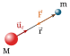
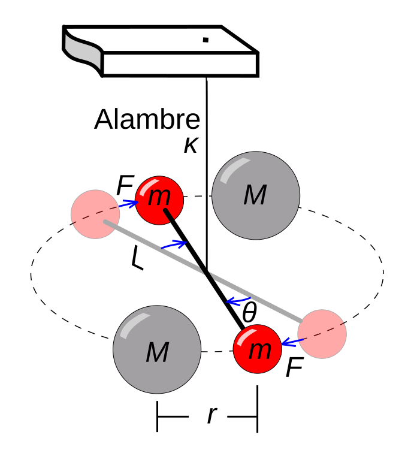
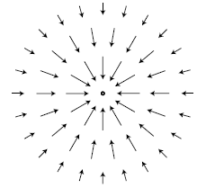
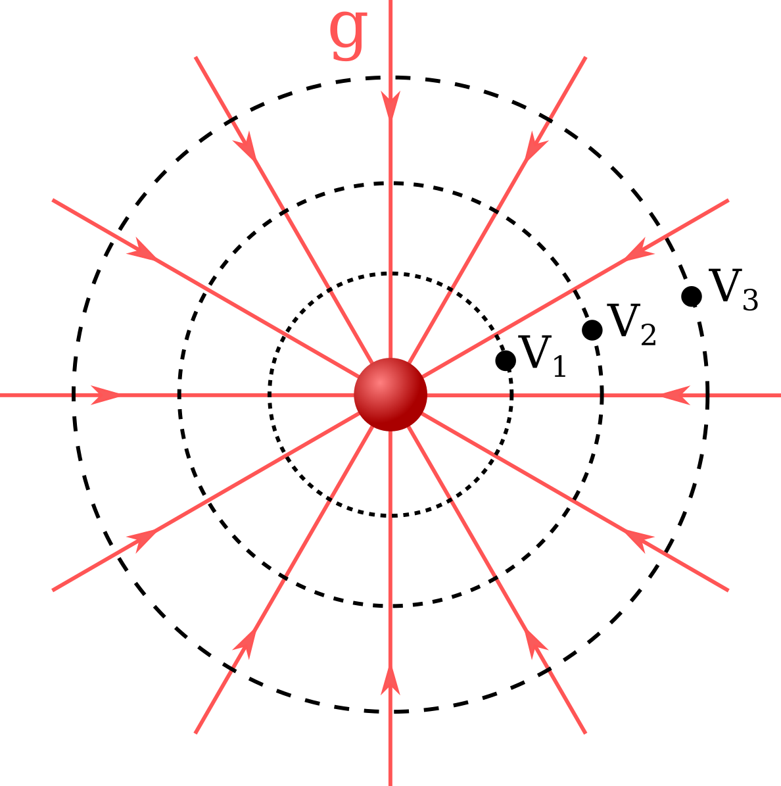
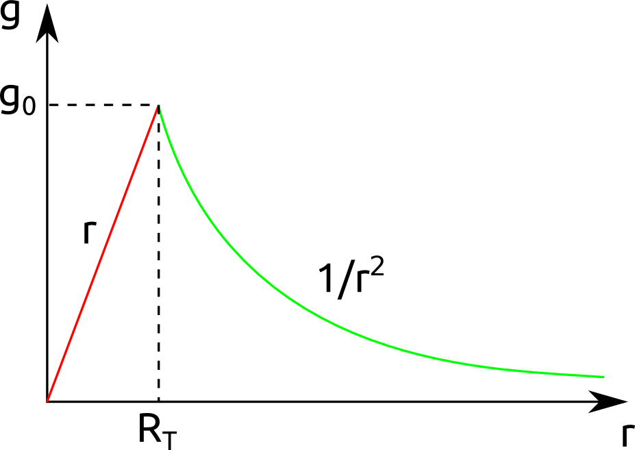
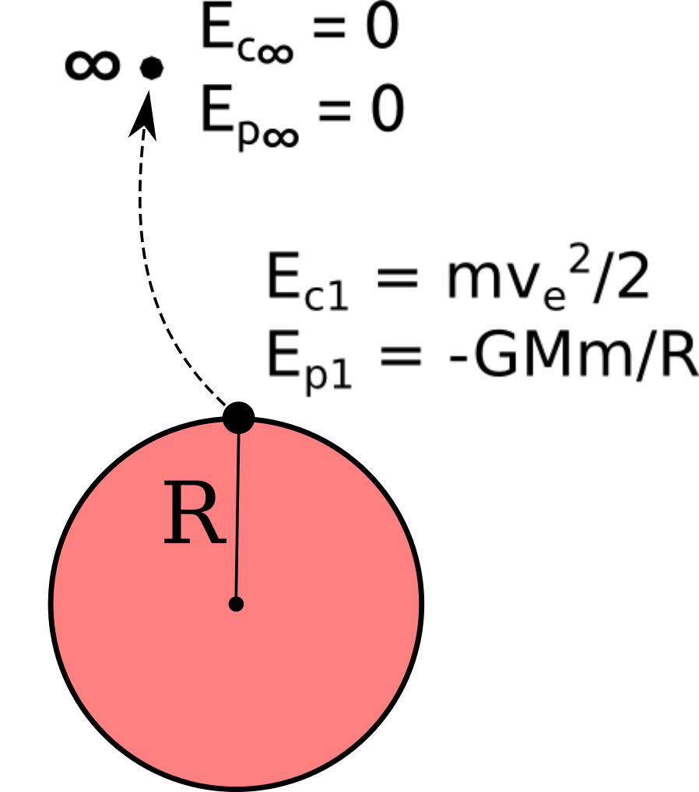
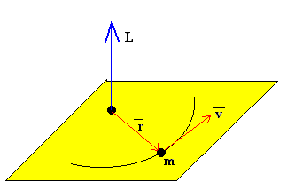
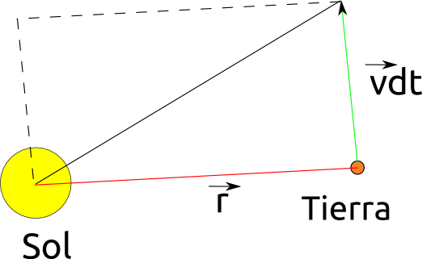
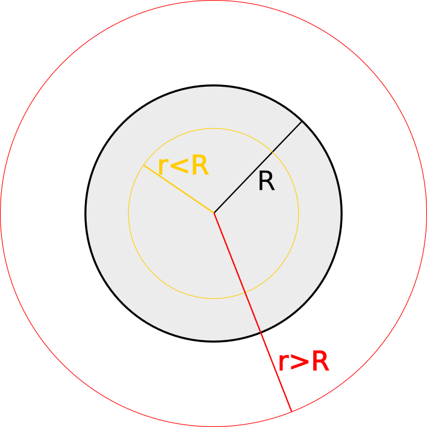

1. Introducción histórica
La concepción del universo ha ido cambiando conforme se conocen mejor los fenómenos astronómicos. Las primeras teorías acerca del universo eran geocéntricas: con la Tierra en el centro, el resto de cuerpos giraban en torno a esta. Salvo excepciones, como el griego Aristarco de Samos, estas teorías se mantuvieron hasta el siglo XVI, cuando el modelo pasó a ser heliocéntrico: con el Sol en el centro y todos los objetos orbitando en torno suya.
Con su complejo modelo de epiciclos y deferentes consiguió explicar de manera ajustada los movimientos de casi todos los astros.
Ideó un modelo mucho más simple colocando el Sol en el centro del universo y las estrellas fijas en una esfera. Poco preciso (órbitas circulares) pero muy sencillo.
Brahe recogió datos muy precisos sobre posiciones de astros. Kepler los usó para enunciar sus leyes demostrando que las órbitas son elípticas.
Confirmó las ideas de Copérnico mediante sus observaciones con el telescopio (fases de Venus, lunas de Júpiter).
El modelo heliocéntrico se impuso finalmente cuando Newton estableció su Teoría de la Gravitación Universal, unificando la física terrestre y celeste.
2. Leyes de Kepler
Primera ley de Kepler
La primera ley de Kepler establece que los planetas se mueven en órbitas elípticas alrededor del Sol, que ocupa uno de los focos de la elipse.
Segunda ley de Kepler
Enunciado: La línea imaginaria que une un planeta con el foco en el que se encuentra el Sol barre áreas iguales en intervalos de tiempo iguales (la velocidad areolar es constante).
Se definen:
- Perihelio: Punto de la órbita planetaria más próximo al Sol.
- Afelio: Punto de la órbita planetaria más alejado del Sol.
De la segunda ley de Kepler se deduce:
🪐 Animación: Segunda Ley de Kepler (Ley de las áreas)
Los sectores barridos en el mismo intervalo de tiempo $\Delta t$ cerca del perihelio (amarillo) y del afelio (cian) tienen exactamente la misma área ($A_1 = A_2$), por lo que el planeta acelera al acercarse al Sol.
Tercera ley de Kepler
Para un planeta dado, el cuadrado de su periodo orbital es proporcional al cubo de su distancia media al Sol.
El valor de la constante $k$ es diferente para cada sistema planetario. Tiene un valor determinado para todos los planetas del Sistema Solar.
Practicar
Enunciado: Europa es un satélite de Júpiter que tarda $3,55\text{ días}$ en recorrer su órbita de $6,7\cdot 10^8\text{ m}$ de radio medio, en torno a dicho planeta. Otro satélite de Júpiter, Ganímedes, tiene un periodo orbital de $7,15\text{ días}$. Calcula el radio medio de la órbita.
👁️ Ver solución paso a paso
Aplicando la tercera ley de Kepler a los satélites:
3. Ley de la gravitación universal
Newton, a partir de las observaciones de Tycho Brahe, Kepler y otros, unifica la gravedad terrestre y celeste y enuncia la ley de la gravitación universal: dos masas $M$ y $m$ separadas una distancia $r$ se atraen con una fuerza cuyo módulo es proporcional al producto de sus masas e inversamente proporcional al cuadrado de la distancia que las separa. Matemáticamente se escribe:
Donde $r$ es la distancia entre los centros de gravedad de las masas consideradas y $G$ es la constante de gravitación universal, que tiene un valor de:
$$G = 6,67 \cdot 10^{-11}\text{ N}\cdot\text{m}^2/\text{kg}^2$$
Expresión vectorial de la fuerza gravitatoria
Tomando como origen de coordenadas el punto en el que se encuentra la masa que produce la atracción ($M$), la fuerza gravitatoria se puede escribir de la siguiente forma:

Siendo $\vec{u}_r$ el vector unitario que va en la dirección de la recta que une las dos masas y sentido saliente de la masa que ejerce la fuerza. Teniendo en cuenta que un vector unitario se define como:
La expresión de la fuerza gravitatoria quedaría como:
Las fuerzas que se ejercen mutuamente las masas $M$ y $m$ son iguales y opuestas (tercera ley de Newton). La fuerza de la gravedad es:
- Siempre atractiva.
- De gran alcance.
- Independiente del medio.
- Es radial y central (siempre está dirigida hacia el mismo punto y su módulo en un punto depende solo de la distancia).
- Actúa en la línea de acción entre las masas.
- Es conservativa.
Determinación de $G$
Cavendish determinó experimentalmente el valor de $G$ usando una balanza de torsión, como se indica en la figura.

Dadas las masas $M$ y $m$ y variando la distancia, Cavendish pudo medir la torsión del cable y con ello la fuerza ejercida entre las masas.
Principio de superposición: Interacción de un conjunto de masas puntuales
Supongamos varios cuerpos ejerciendo una fuerza gravitatoria sobre otro. Para el cálculo de la fuerza total se sigue el principio de superposición, que dice: la fuerza gravitatoria ejercida por varias masas $M_1, M_2, M_3, \dots$ sobre otra $m$ es igual a la suma vectorial de la fuerza que cada masa realizaría de forma individual; matemáticamente:
Practicar
Enunciado: Dibuje en un esquema las fuerzas que actúan sobre un cuerpo de $1000\text{ kg}$, situado en el punto medio entre la Tierra y la Luna, y calcule el valor de la fuerza resultante.
Datos: $G = 6,67 \cdot 10^{-11}\text{ N}\cdot\text{m}^2/\text{kg}^2$; $M_T = 5,97 \cdot 10^{24}\text{ kg}$; $M_L = 7,35 \cdot 10^{22}\text{ kg}$; distancia Tierra-Luna $d_{TL} = 3,84 \cdot 10^8\text{ m}$.
👁️ Ver solución paso a paso
1. Esquema de fuerzas: Situamos la Tierra a la izquierda y la Luna a la derecha sobre el eje $X$. En el punto medio ($r = \frac{d_{TL}}{2} = 1,92 \cdot 10^8\text{ m}$), el cuerpo de masa $m = 1000\text{ kg}$ sufre dos fuerzas atractivas opuestas:
2. Cálculo de los módulos:
3. Fuerza resultante: Aplicando el principio de superposición ($\vec{F}_R = \vec{F}_T + \vec{F}_L$), como tienen la misma dirección y sentidos opuestos:
Es decir, una fuerza neta de $10,67\text{ N}$ dirigida hacia el centro de la Tierra.
4. El campo gravitatorio
La fuerza de la gravedad, descrita por Newton, es la primera fuerza de acción a distancia, es decir, que actúa sobre los cuerpos sin que estos tengan que estar necesariamente en contacto. Para explicar este hecho se introduce el concepto de campo.
Se dice que en una región del espacio existe un campo asociado a una magnitud si a cada punto del espacio podemos asociar un valor de dicha magnitud. Si la magnitud es vectorial dará como resultado un campo vectorial; por el contrario, si se trata de una magnitud escalar, producirá un campo escalar.
De este modo toda partícula material, por el hecho de tener masa, crea un campo gravitatorio, es decir, una perturbación cuyo efecto es visible si colocamos otra masa de prueba, pues será atraída. El campo gravitatorio es un campo vectorial y siempre atractivo.
Intensidad del campo gravitatorio
Definimos la intensidad del campo gravitatorio ($\vec{g}$) creado por una masa $M$ en un punto $P$ como la fuerza que actúa sobre la unidad de masa colocada en dicho punto. Matemáticamente:
El vector intensidad del campo gravitatorio se mide en $\text{N/kg}$ o $\text{m/s}^2$.
La intensidad del campo gravitatorio creado por una masa puntual $M$ en un punto situado a una distancia $r$ es:
Las unidades de $\vec{g}$ hacen que se le conozca también como aceleración de la gravedad.
Nota: De aquí podemos deducir que la aceleración, y por tanto la velocidad con que caen distintos objetos, no depende de su masa.
Practicar
Enunciado: Calcula la intensidad del campo gravitatorio en el punto $(-3, 4)\text{ m}$ creado por una partícula puntual de $3\text{ kg}$ situada en el origen de coordenadas.
Dato: $G = 6,67 \cdot 10^{-11}\text{ N}\cdot\text{m}^2/\text{kg}^2$.
👁️ Ver solución paso a paso
1. Vector de posición $\vec{r}$ y su módulo $r$: Como la masa $M = 3\text{ kg}$ está en el origen $(0,0)$ y el punto en $(-3,4)\text{ m}$:
2. Vector unitario $\vec{u}_r$:
3. Cálculo del vector intensidad del campo gravitatorio $\vec{g}$:
Campo creado por una distribución de masas puntuales. Principio de superposición
La intensidad de campo gravitatorio en un punto del espacio creado por varios cuerpos puntuales se obtiene calculando la intensidad del campo originado por cada uno de ellos de forma separada y sumando vectorialmente dichas intensidades, de acuerdo con el principio de superposición.
Si se tienen varias masas $M_1, M_2, \dots$ y cada una de ellas crea un campo gravitatorio de intensidad $\vec{g}_1, \vec{g}_2, \dots$ respectivamente, la intensidad del campo gravitatorio creado por todas ellas es:
Practicar: Campo creado por dos masas iguales
Enunciado: Calcular la intensidad del campo gravitatorio creado en el punto $P(0,5)\text{ m}$ por dos masas iguales de $8\text{ kg}$ situadas en los puntos $A(-4,0)\text{ m}$ y $B(4,0)\text{ m}$.
Dato: $G = 6,67 \cdot 10^{-11}\text{ N}\cdot\text{m}^2/\text{kg}^2$.
👁️ Ver solución paso a paso
1. Vectores de posición desde cada masa hasta $P(0,5)$:
Ambas distancias al punto $P$ son idénticas:
2. Cálculo de $\vec{g}_1$ y $\vec{g}_2$ (usando $\vec{g}_i = -\frac{G M_i}{r_i^3}\vec{r}_i$):
3. Campo gravitatorio total ($\vec{g}_T = \vec{g}_1 + \vec{g}_2$): Por simetría, las componentes horizontales ($\vec{i}$) se anulan entre sí y se suman las verticales ($\vec{j}$):
Practicar: Campo creado por tres masas en el origen
Enunciado: Calcular el valor del campo gravitatorio que crean en el punto $P(0,0)\text{ m}$ tres masas: masa $A$ de $0,5\text{ kg}$ situada en $A(-2,-1)\text{ m}$, masa $B$ de $2\text{ kg}$ situada en $B(2,0)\text{ m}$, y masa $C$ de $3\text{ kg}$ situada en $C(2,3)\text{ m}$.
Dato: $G = 6,67 \cdot 10^{-11}\text{ N}\cdot\text{m}^2/\text{kg}^2$.
👁️ Ver solución paso a paso
1. Vectores de posición desde cada masa hasta $P(0,0)$:
2. Campo creado por cada masa en $P(0,0)$:
3. Suma vectorial ($\vec{g}_T = \vec{g}_A + \vec{g}_B + \vec{g}_C$):
Módulo del campo resultante: $|\vec{g}_T| = \sqrt{(3,59 \cdot 10^{-11})^2 + (9,83 \cdot 10^{-12})^2} = 3,72 \cdot 10^{-11}\text{ N/kg}$.
5. Trabajo realizado por la fuerza gravitatoria
La definición de trabajo que hemos usado hasta ahora ha sido $W = \vec{F} \cdot \vec{r} = F \cdot r \cdot \cos\alpha$, que es válida cuando la fuerza se mantiene constante. Cuando la fuerza no es constante durante el recorrido, el trabajo debe ser calculado con la expresión:
Por tanto, el trabajo realizado por la fuerza gravitatoria al desplazar un cuerpo desde la posición $i$ hasta la posición $f$ es:
(Recordamos que la unidad del SI del trabajo es el Julio ($\text{J}$).)
➕ Saber más: Justificación diferencial ($\vec{u}_r \cdot d\vec{r} = dr$)
En el paso anterior hemos tenido en cuenta que:
De la expresión se deduce que:
- El trabajo realizado en desplazar una masa entre dos puntos no depende del camino seguido, sino únicamente de los puntos final e inicial ($\Rightarrow$ La fuerza gravitatoria es conservativa).
- El trabajo a lo largo de una trayectoria cerrada es cero.
- Si $r_f > r_i \rightarrow$ el trabajo que realiza la fuerza gravitatoria es negativo cuando se aleja (dicho trabajo debe realizarlo una fuerza externa para que se produzca ese desplazamiento).
- Si $r_f < r_i \rightarrow$ el trabajo que realiza la fuerza gravitatoria es positivo cuando se acerca (para realizar dicho desplazamiento el trabajo lo realiza la fuerza gravitatoria).
Practicar: Trabajo gravitatorio y punto de campo nulo
Enunciado: Un objeto de masa $M_1 = 100\text{ kg}$ está situado en $A(6,0)\text{ m}$ y otro de masa $M_2 = 300\text{ kg}$ está situado en $B(-6,0)\text{ m}$. Calcula:
- El trabajo gravitatorio cuando $M_1$ se traslada desde $A$ hasta $C(-6,6)\text{ m}$.
- El punto en que $\vec{g} = \vec{0}$.
Dato: $G = 6,67 \cdot 10^{-11}\text{ N}\cdot\text{m}^2/\text{kg}^2$.
👁️ Ver solución paso a paso
a) Trabajo gravitatorio al trasladar $M_1$ desde $A$ hasta $C$:
La masa $M_2$ permanece fija en $B(-6,0)\text{ m}$ creando el campo. Calculamos las distancias inicial ($r_i = d_{BA}$) y final ($r_f = d_{BC}$) de $M_1$ respecto a $M_2$:
Aplicamos la expresión del trabajo de la fuerza gravitatoria:
El trabajo es positivo porque $M_1$ se acerca a $M_2$ ($r_f < r_i$).
b) Punto en que $\vec{g} = \vec{0}$ (con $M_1$ en su posición inicial $A(6,0)$):
El punto de campo nulo debe situarse sobre el segmento que une $B(-6,0)$ y $A(6,0)$ (longitud total $d = 12\text{ m}$), donde los vectores $\vec{g}_1$ y $\vec{g}_2$ tienen sentidos opuestos. Si llamamos $x$ a la distancia desde $B(-6,0)$ hacia la derecha, la distancia hasta $A(6,0)$ será $(12 - x)$:
Tomando raíces cuadradas (con $0 < x < 12$):
Como $B$ está en $x_B = -6\text{ m}$, la coordenada del punto es $x_P = -6 + 7,61 = 1,61\text{ m}$. Por tanto, el punto es $P(1,61; 0)\text{ m}$.
Energía potencial gravitatoria
Una fuerza es conservativa si el trabajo realizado para desplazar un cuerpo entre dos puntos solo depende del punto inicial y del final, pero no del camino seguido.
Por el resultado obtenido en el apartado anterior deducimos que la fuerza gravitatoria es conservativa; por ejemplo, al elevar un cuerpo una altura $h$ invertimos una cantidad de energía que después nos es devuelta por el campo íntegramente al dejarlo caer desde la altura $h$, es decir, al realizar un camino cerrado el trabajo es cero, pues el punto inicial y final es el mismo (solo depende de los puntos final e inicial).
Siempre que una fuerza sea conservativa se le puede asociar una magnitud llamada energía potencial ($U$), que cumple:
De donde se deduce que:
La constante que aparece de manera natural durante el proceso de integración puede hacerse cero si suponemos que en el infinito la energía potencial será cero:
Físicamente, la energía potencial coincide con el trabajo que tiene que realizar la fuerza gravitatoria para llevar desde un punto hasta el infinito a una masa $m$:
Energía mecánica de una masa $m$ en presencia de un campo gravitatorio
A partir de la definición de energía potencial podemos deducir que la energía mecánica de un cuerpo en el seno de un campo gravitatorio es:
Energía potencial de un sistema de partículas
La energía potencial gravitatoria de un conjunto de masas será la suma de cada una de las energías aportadas al sistema por cada par de masas:
Aproximación a $U = m g_0 h$
En cursos anteriores hemos usado la expresión $U = m g_0 h$ para calcular la energía potencial gravitatoria. Esta última solo es válida para cuerpos que se encuentran cerca de la superficie terrestre. Supongamos que queremos levantar un cuerpo hasta una altura $h$. La variación de energía potencial que experimenta es:
Conservación de la energía mecánica en un campo gravitatorio
Se dice que una fuerza es conservativa cuando el trabajo realizado por una fuerza solo depende de los puntos inicial y final y no de la trayectoria seguida. En tales condiciones la fuerza cumple el principio de conservación de la energía mecánica, que matemáticamente se expresa como:
Potencial gravitatorio
Se define el potencial del campo gravitatorio creado por una masa $M$ en un punto como la energía potencial gravitatoria cuando en dicho punto se coloca una masa de prueba de $1\text{ kg}$, o bien la energía potencial gravitatoria por unidad de masa colocada en el punto en cuestión. Matemáticamente:
En el SI las unidades del potencial son $\text{J/kg}$.
Potencial de un sistema de partículas
Si se tiene una distribución discreta de masas $M_1, M_2, \dots$ puntuales y cada una de ellas crea un potencial $V_1, V_2, \dots$ en un punto $P$, el potencial total en $P$ es igual a la suma escalar de los potenciales individuales:
Relación entre $W$ y $V$
Puesto que trabajo y energía potencial gravitatoria están relacionadas y el potencial se define a partir de la energía potencial gravitatoria, podemos relacionar trabajo y potencial del siguiente modo:
Representación del campo gravitatorio
Como el campo gravitatorio es un campo de fuerzas vectorial, se puede representar en el espacio por un conjunto de flechas que representan el vector intensidad del campo gravitatorio para cada punto del espacio. Cada línea indica el camino que seguiría una masa al colocarla en cada punto.
Las líneas de campo cumplen las siguientes propiedades:
- Su densidad es proporcional al módulo del vector intensidad de campo.
- Su sentido es el de la fuerza que actuaría si se colocara una masa de prueba.
- Su dirección es tangente en cada punto al vector intensidad de campo.

Los puntos de un campo gravitatorio que tienen el mismo potencial forman una superficie equipotencial. Puede demostrarse que las superficies equipotenciales y las líneas de campo son perpendiculares:
Si una masa se mueve en el seno de un campo gravitatorio siguiendo una superficie equipotencial, el trabajo realizado por la fuerza gravitatoria será cero, pues:
Pero no olvidemos que $W = \int \vec{F} \cdot d\vec{r} = 0 \Longrightarrow$ Si el trabajo es $0$, entonces la fuerza gravitatoria (y las líneas de campo) y las superficies equipotenciales son perpendiculares.

6. El campo gravitatorio terrestre (esfera maciza)
Es la zona del espacio donde se manifiesta la fuerza gravitatoria de la Tierra. La Tierra no es una masa puntual, por lo que podemos definir la gravedad dentro y fuera de la Tierra.
Campo gravitatorio fuera de la Tierra ($r > R_T$)
Para una distancia $r > R_T$ se puede considerar que la Tierra es puntual; así el campo gravitatorio es:
Campo gravitatorio dentro de la Tierra ($r < R_T$)
Para una distancia $r < R_T$, según se puede ver en el Anexo II, se obtiene:

La fuerza peso
El peso es la fuerza gravitatoria que ejerce la Tierra sobre los cuerpos. El peso es un vector que siempre va dirigido al centro de la Tierra. Es responsable de la caída con aceleración $9,8\text{ m/s}^2$ en las inmediaciones de su superficie.
Si nos alejamos de la Tierra el peso de un cuerpo cambiará; concretamente será menor cuanto más lejos estemos.
Gravedad en la superficie terrestre
Un cuerpo en la superficie terrestre se encuentra sometido a la fuerza de la gravedad $F_g$; calculemos la aceleración con que cae aplicando la segunda ley de Newton:
Podríamos haber usado esta expresión para medir la masa de la Tierra, donde $m$ es la masa del cuerpo, $M_T$ es la masa de la Tierra, $R_T$ el radio terrestre y $g_0$ la aceleración de la gravedad en la superficie.
Gravedad a una altura $h$ sobre la superficie
Sea $g$ la aceleración de la gravedad a una altura $h$ sobre la superficie terrestre y $g_0$ la aceleración en la superficie terrestre:
Dividiendo ambas expresiones:
De donde se obtiene que $g < g_0$.
7. Aplicaciones de la ley de gravitación
Cálculo de la masa de un planeta
Es posible usar la ley de la gravitación universal para conocer la masa de un planeta si se conoce el periodo orbital y el radio de un satélite que orbita en torno a él.
Supongamos una órbita circular; entonces la fuerza de la gravedad es la fuerza centrípeta:
Practicar: Estimación de la masa de Júpiter
Enunciado: Estimar la masa de Júpiter sabiendo que el satélite Europa gira alrededor del planeta describiendo una órbita de radio $671\,000\text{ km}$ y que su periodo es de $3\text{ días}$, $13\text{ horas}$ y $13\text{ minutos}$.
Dato: $G = 6,67 \cdot 10^{-11}\text{ N}\cdot\text{m}^2/\text{kg}^2$.
👁️ Ver solución paso a paso
1. Cambio de unidades al Sistema Internacional (SI):
2. Cálculo de la masa de Júpiter ($M_J$):
Deducción de la tercera ley de Kepler
Supongamos un satélite orbitando en torno a un planeta en una órbita circular; como ya hemos visto, la fuerza centrípeta responsable de este tipo de movimiento es la gravedad:
Hemos obtenido la $3^\text{a}$ ley de Kepler.
La dinámica de los planetas
Todo cuerpo que se encuentra girando en torno a un punto debe estar sometido a una fuerza centrípeta ($F_c$). En el caso de un satélite, es la gravedad la centrípeta:
La velocidad puede calcularse como $v = \frac{2\pi r}{T}$, de donde:
Velocidad orbital
Supongamos un satélite o cuerpo orbitando en torno a un planeta en una órbita circular. La fuerza centrípeta necesaria para realizar este movimiento es la fuerza de la gravedad:
Podemos observar que la velocidad orbital no depende de la masa del cuerpo orbitante y que es menor cuanto más alejado está el satélite.
Podemos obtener el periodo de revolución del cuerpo orbitante:
Para mantener dicho cuerpo en órbita no es necesario aplicar energía continuamente.
Practicar: Órbita del satélite Meteosat
Ejemplo: El satélite Meteosat gira alrededor de la Tierra en una órbita circular a una altura de $800\text{ km}$. Calcula la velocidad a la que orbita y el periodo.
Datos: $G = 6,67 \cdot 10^{-11}\text{ N}\cdot\text{m}^2/\text{kg}^2$; $M_T = 5,98 \cdot 10^{24}\text{ kg}$; $R_T = 6370\text{ km}$.
👁️ Ver solución paso a paso
1. Radio orbital ($r$):
2. Velocidad orbital ($v$):
3. Periodo orbital ($T$):
Satélites geoestacionarios
Son aquellos satélites cuyo período de revolución es $23,98\text{ h}$ (igual al periodo de rotación terrestre en el plano ecuatorial), por lo que se mantienen encima del mismo punto sobre la Tierra.
Sabemos que $T = 2\pi \sqrt{\frac{r^3}{GM}}$; si despejamos $r$ y sustituimos el periodo en segundos se tiene que el radio de la órbita del satélite geoestacionario es $r = 4,22 \cdot 10^7\text{ m}$, y la altura sobre la superficie terrestre será:
Energía de un satélite en su órbita
Supongamos un satélite de masa $m$ orbitando en torno a la Tierra ($M$) a una distancia $r$ del centro de la misma y con velocidad $v$. Su energía mecánica es:
Si además su órbita es circular, su velocidad es $v = \sqrt{\frac{GM}{r}}$ y su energía cinética es $E_c = \frac{1}{2} m \frac{GM}{r} = \frac{GMm}{2r}$. De este modo, la energía mecánica de un satélite en órbita circular es:
Velocidad de puesta en órbita
Calculemos la velocidad que hay que comunicar a un cohete, $v_L$, desde la superficie terrestre para colocarlo en una órbita circular de radio $r$. Aplicando la conservación de la energía mecánica:
Donde $M$ es la masa de la Tierra, $R_T$ su radio y $r$ el radio de la órbita.
Si ahora necesitamos calcular el trabajo desarrollado por una fuerza no conservativa para poner en órbita el satélite, podríamos bien aplicar el principio de la energía $W = \Delta E_M$ o bien calcular la energía cinética que esta tiene que comunicar al satélite para ponerlo en órbita:
Energía para pasar de una órbita a otra
Supongamos un satélite de masa $m$ orbitando, con una órbita de radio $r_i$, en torno a un cuerpo de masa $M$. La energía que hay que comunicar a dicho satélite para colocarlo en una órbita de radio $r_f$ será la diferencia de las energías mecánicas de las dos órbitas:
¿Por qué no puede calcularse el trabajo como $-\Delta U$? Porque para cambiar de órbita es necesaria la acción de una fuerza externa (propulsores) que no es conservativa, variando tanto la energía potencial como la cinética.
Velocidad de escape
Se define la velocidad de escape ($v_e$) como la mínima velocidad con la que tiene que partir un satélite de un planeta para que escape completamente a los efectos de su campo gravitatorio, es decir, llegue hasta el infinito, donde los efectos de la gravedad son estrictamente cero, y con velocidad cero.

- En el infinito la energía potencial es cero, pues: $U_{\infty} = -\frac{GMm}{r \to \infty} = 0$.
- En el infinito la energía cinética es cero, pues buscamos la mínima velocidad; una velocidad superior a la velocidad de escape haría que llegase al infinito con cierta velocidad residual.
Puesto que durante todo el trayecto se conserva la energía mecánica del satélite, podemos aplicarle el principio de conservación de la energía, tomando como punto inicial la salida de su movimiento y como final la llegada al infinito:
Para el caso de la Tierra:
Practicar: Velocidad de escape de un cuerpo de 50 kg
Enunciado: Calcula la velocidad de escape de un cuerpo de $50\text{ kg}$ situado en la superficie de la Tierra.
Datos: $G = 6,67 \cdot 10^{-11}\text{ N}\cdot\text{m}^2/\text{kg}^2$; $M_T = 5,98 \cdot 10^{24}\text{ kg}$; $R_T = 6370\text{ km}$.
👁️ Ver solución paso a paso
Como hemos deducido a partir de la conservación de la energía mecánica, la masa $m = 50\text{ kg}$ del cuerpo se cancela en la ecuación, por lo que la velocidad de escape no depende de la masa del objeto:
Practicar: Radio de la Tierra para que $v_e = c$ (Agujero negro)
Enunciado: Calcula el radio que tendría que tener la Tierra para que la velocidad de escape en su superficie sea igual a la velocidad de la luz en el vacío ($c = 3 \cdot 10^8\text{ m/s}$).
Datos: $G = 6,67 \cdot 10^{-11}\text{ N}\cdot\text{m}^2/\text{kg}^2$; $M_T = 5,98 \cdot 10^{24}\text{ kg}$; $c = 3 \cdot 10^8\text{ m/s}$.
👁️ Ver solución paso a paso
Partimos de la expresión de la velocidad de escape e igualamos $v_e = c$ para despejar el radio crítico (conocido como radio de Schwarzschild):
Toda la masa de la Tierra tendría que comprimirse en una esfera de menos de $9\text{ mm}$ de radio para convertirse en un agujero negro.
Clasificación de satélites en función de la altura de la órbita
Los satélites artificiales se pueden clasificar según su altura sobre la superficie terrestre en:
| Tipo | Altura | Ejemplo |
|---|---|---|
| LEO (Low Earth Orbit) | De $200\text{ km}$ a $1\,500\text{ km}$ | Estación Espacial Internacional (ISS) |
| MEO (Medium Earth Orbit) | De $1\,500\text{ km}$ a $36\,000\text{ km}$ | Telefonía, televisión, experimentación, GPS, GLONASS, Galileo |
| GEO (Geostationary Orbit) | $36\,000\text{ km}$ | Meteosat o satélites de comunicaciones |
8. Caos determinista
Hemos visto cómo para dos cuerpos, la física newtoniana nos permite conocer la fuerza gravitatoria que los atrae y calcular la velocidad orbital, periodo... Para tres cuerpos aplicamos las mismas leyes, pero no podemos resolver matemáticamente las ecuaciones que surgen más que introduciendo aproximaciones muy fuertes aunque bastante reales (uno de los cuerpos tiene muchísima más masa que los otros, uno de los cuerpos se mueve mucho más cerca de uno que del otro,...). Actualmente los ordenadores permiten obtener aproximaciones casi con el grado de precisión que se desee.
Un conjunto de 3 o más cuerpos ligados gravitatoriamente se dice que son un sistema caótico. Queremos indicar con ello que, aunque se aplican y cumplen las leyes de la gravitación que determinan la velocidad, posición, periodo, etc., de cada cuerpo en cada instante, en realidad estos parámetros dependen fuertemente de las condiciones iniciales, lo que hace imposible en la práctica predecirlos.
Una pequeñísima variación en las condiciones iniciales tiene unos efectos enormes en el movimiento de los cuerpos.
🌌 Simulación Interactiva: Caos determinista (Sistema binario y planeta)
Dos planetas idénticos parten casi del mismo punto (separados apenas $0,5\text{ px}$) alrededor de dos estrellas fijas (Sol 1 y Sol 2). Observa cómo sus órbitas divergen de forma impredecible.
9. La materia oscura
Se denomina materia oscura a un tipo de materia que corresponde aproximadamente al $80\%$ de la materia del universo (alrededor del $27\%$ del contenido total de materia-energía), y que no es ni energía oscura ni materia ordinaria. De hecho, no interactúa en ninguna forma con la radiación electromagnética, siendo completamente transparente en todo el espectro electromagnético, lo que hace que actualmente sea imposible de detectar directamente.
Su existencia se deduce a partir de sus efectos gravitacionales en la materia visible, tales como las estrellas o las galaxias, así como en las anisotropías del fondo cósmico de microondas presente en el universo.
La materia oscura fue propuesta por Fritz Zwicky en 1933 ante la evidencia de una «masa no visible», que influía en las velocidades orbitales de las galaxias en los cúmulos galácticos (teorema del Virial). Otros efectos donde se hace patente la materia oscura es en fenómenos de lentes gravitatorias o en la curva de rotación de las estrellas de una galaxia.
📊 Gráfica: Curva de rotación de una galaxia espiral
Según la mecánica newtoniana con solo materia visible ($v \propto 1/\sqrt{r}$), las estrellas exteriores deberían girar más lento. Sin embargo, se observa una velocidad casi constante debido al halo de materia oscura.
Como ya hemos dicho, la composición de la materia oscura se desconoce. Puede incluir neutrinos ordinarios y pesados, partículas elementales exóticas (WIMPs y los axiones), cuerpos astronómicos como las estrellas enanas, los planetas (colectivamente llamados MACHO) y las nubes de gases no luminosos (halos galácticos). Las pruebas actuales favorecen los modelos en que el componente primario de la materia oscura son las nuevas partículas elementales llamadas colectivamente materia oscura no bariónica, es decir, materia no ordinaria.
10. El tejido espaciotemporal
La teoría general de la relatividad o relatividad general es una teoría del campo gravitatorio y de los sistemas de referencia generales, publicada por Albert Einstein. En ella la gravedad deja de ser una fuerza fundamental de la naturaleza y pasa a ser la deformación del tejido espaciotemporal.
El espacio-tiempo es como una malla que se extiende por los dominios del universo. Dicha malla, como si de una sábana se tratara, al colocarle una masa encima se deforma produciendo un hundimiento. Dicho hundimiento representa los efectos de la gravitación; por tanto, la gravedad no es más que la consecuencia de la curvatura del espacio-tiempo.
🕸️ Visualización Interactiva: Curvatura del espacio-tiempo
Aumenta la masa central para observar cómo se hunde la malla del espacio-tiempo y cómo un cuerpo menor sigue la geodésica curvada a su alrededor.
Ejercicios de Clase
Leyes de Kepler y gravitación universal
- Dos planetas de masas iguales orbitan alrededor de una estrella de masa mucho mayor. El planeta 1 describe una órbita circular de radio $r_{1}=10^{8}\text{ km}$ con un periodo de rotación $T_{1}=2\text{ años}$, mientras que el planeta 2 describe una órbita elíptica cuya distancia más próxima es $r_{1}=10^{8}\text{ km}$ y la más alejada es $r_{2}=1,8\cdot 10^{8}\text{ km}$. ¿Cuál es el periodo de rotación del planeta 2? ¿Puede pertenecer a dicho sistema planetario un cuerpo cuya distancia fuese $r=10^{5}\text{ km}$ y período $T=2,5\text{ años}$? Sol: a) $3,3\text{ años}$; b) no.
- Si por alguna causa la Tierra redujese su radio a la mitad manteniendo su masa, razone cómo se modificarían: a) La intensidad del campo gravitatorio en su superficie. b) Su órbita alrededor del Sol. Sol: a) $4g_{0}$; b) no cambia.
- Una mujer cuyo peso en la Tierra es $700\text{ N}$ se traslada a una altura de dos radios terrestres por encima de la superficie de la Tierra. ¿Cuál será su peso a dicha altura? Sol: $78\text{ N}$.
- Un satélite de masa $350\text{ kg}$ describe órbitas circulares alrededor de la Tierra a una altura de $630\text{ km}$. a) ¿Cuánto vale la intensidad del campo gravitatorio creado por la Tierra a esta altura? b) ¿Cuánto vale la aceleración centrípeta del satélite? c) ¿Cuánto vale la energía mecánica del satélite? d) Su velocidad orbital. e) La energía necesaria para que, partiendo de esa órbita, se coloque en otra órbita circular a una altura de $10\,000\text{ km}$. f) En este proceso, ¿cuánto cambia su momento angular? Datos: $G$, $M_{T}$, $R_{T}$. Sol: a) $8,14\text{ N/kg}$; b) $g$; c) $-10^{10}\text{ J}$; d) $7549\text{ m/s}$; e) $4\cdot 10^{9}\text{ J}$.
El campo gravitatorio
- Suponga que la masa de la Tierra se duplicara: Calcule razonadamente el nuevo periodo orbital de la Luna suponiendo que su radio orbital permaneciera constante. Si, además de duplicarse la masa terrestre, se duplicara su radio, ¿cuál sería el valor de $g$ en la superficie terrestre? Datos: $G$, $M_{T}$, $R_{T}$ y $r_{\text{órbita lunar}}=3,84\cdot 10^{8}\text{ m}$. Sol: $T_{0}/\sqrt{2}$ (o $T_0/2$ según enunciado); $g_{0}/2$ (o $g_0/4$).
- Si la masa de Marte es $0,11$ veces la masa de la Tierra y su radio es $0,53$ veces el radio de la Tierra, obtener la aceleración de la gravedad en la superficie de Marte. Dato: $g_{0}(\text{Tierra})=9,8\text{ m/s}^{2}$. Sol: $3,84\text{ m/s}^{2}$.
- La masa de la Luna es igual a $0,01255$ veces la de la Tierra y su radio es igual a $0,273$ veces el de la Tierra. ¿Cuál es la aceleración de un cuerpo que cae libremente cerca de la superficie de la Luna? Sol: $1,65\text{ m/s}^{2}$.
- Dos cuerpos, de $10\text{ kg}$ de masa, se encuentran en dos vértices de un triángulo equilátero, de $0,5\text{ m}$ de lado. a) Calcule el campo gravitatorio que estas dos masas generan en el tercer vértice del triángulo. b) Calcule el trabajo que realiza la fuerza gravitatoria de las dos masas en traer otro cuerpo de $10\text{ kg}$ desde el infinito hasta el tercer vértice del triángulo. c) El trabajo que realiza la fuerza gravitatoria para llevar la tercera masa desde el vértice hasta el punto medio de las otras dos masas. Datos: $G$. Sol: a) $(0, -4,62\cdot 10^{-9})\text{ m/s}^{2}$; b) $2,67\cdot 10^{-8}\text{ J}$; c) $2,67\cdot 10^{-8}\text{ J}$.
- Se tienen tres masas de $5\text{ kg}$, $3\text{ kg}$ y $2\text{ kg}$ cuyas posiciones son respectivamente $(0,0)$, $(0,1)$ y $(1,1)$, que son los vértices de un cuadrado de lado $1\text{ m}$. Calcular: a) La intensidad de campo gravitatorio en el vértice libre y el ángulo que forma con el eje $x$. b) La energía potencial gravitatoria y el potencial gravitatorio de una masa de $1\text{ kg}$ que se colocara en dicho vértice. c) El trabajo que realiza el campo para llevar la masa desde dicho punto hasta el centro del cuadrado, ¿será espontáneo el movimiento? Sol: a) $4,56\cdot 10^{-10}\text{ m/s}^{2}$ y $25,96^\circ$; b) $-6,088\cdot 10^{-10}\text{ J}$ y $-6,088\cdot 10^{-10}\text{ J/kg}$; c) $3,4\cdot 10^{-10}\text{ J}$, espontáneo.
Energía potencial y potencial gravitatorio
- Disponemos de dos masas esféricas cuyos diámetros son $8$ y $2\text{ cm}$, respectivamente. Considerando únicamente la interacción gravitatoria entre estos dos cuerpos, calcula: a) La relación entre sus masas $m_{1}/m_{2}$ sabiendo que si ponemos ambos cuerpos en contacto el campo gravitatorio en el punto donde se tocan es nulo. b) El valor de cada masa sabiendo que el trabajo necesario para separar los cuerpos, desde la posición de contacto hasta otra donde sus centros distan $20\text{ cm}$, es: $W=1,6\cdot 10^{-11}\text{ J}$. Sol: a) $m_{1}/m_{2}=16$; b) $m_{2}=0,031\text{ kg}$; $m_{1}=0,51\text{ kg}$.
- Dibuje en un esquema las líneas de fuerza del campo gravitatorio creado por una masa puntual $M$. Sean $A$ y $B$ dos puntos situados en la misma línea de fuerza del campo, siendo $B$ el punto más cercano a $M$. a) Si una masa $m$ está situada en $A$ y se traslada a $B$, ¿aumenta o disminuye su energía potencial? ¿Por qué? b) Si una masa $m$ está situada en $A$ y se traslada a otro punto $C$, situado a la misma distancia de $M$ que $A$, pero en otra línea de fuerza, ¿aumenta o disminuye la energía potencial? Razone su respuesta.
- Un meteorito de $400\text{ kg}$ de masa que se dirige directo, en caída libre, hacia la Tierra tiene una velocidad de $20\text{ m/s}$ a una altura sobre la superficie terrestre $h=500\text{ km}$. Determina: a) La energía mecánica del meteorito a dicha altura. b) La velocidad con la que impactará sobre la superficie terrestre despreciando la fricción con la atmósfera. c) El peso del meteorito a dicha altura $h$. Datos: $G$, $M_{T}$, $R_{T}$. Sol: a) $-2,3\cdot 10^{10}\text{ J}$; b) $3012\text{ m/s}$ (o $3211\text{ m/s}$); c) $3383\text{ N}$.
Velocidad de escape
- La masa de Marte es $9$ veces menor que la de la Tierra y su diámetro es $0,5$ veces el diámetro terrestre. a) Determine la velocidad de escape en Marte. b) ¿Cuál sería la altura máxima alcanzada por un proyectil lanzado verticalmente hacia arriba, desde la superficie de Marte, con una velocidad de $720\text{ km/h}$? Datos: $g_{0}$, $R_{T}$. Sol: a) $5,3\text{ km/s}$; b) $4511\text{ m}$.
Anexo I: Ejercicios para reforzar
Cuestiones y Problemas
- Diga si la siguiente frase es cierta o falsa y razone la respuesta: a) La intensidad en un punto del campo gravitatorio terrestre es tanto mayor cuanto mayor es la masa que se coloque en dicho punto. b) Si en un punto del espacio la intensidad del campo gravitatorio creado por varias masas es nulo, también lo será el potencial gravitatorio.
- El campo gravitatorio creado por dos masas, $m_{1}$ y $m_{2}$, que podemos considerar puntuales y separadas una distancia $d$, se anula a $d/3$ de la masa $m_{1}$. ¿Cuánto vale la relación entre las masas $m_{1}/m_{2}$? Sol: $m_{2}/m_{1}=4$ (es decir, $m_1/m_2 = 1/4$).
- a) Comenta si es verdadera o falsa la siguiente afirmación: «Si la Luna gira alrededor de la Tierra siguiendo un movimiento circular uniforme, no tiene aceleración». b) Un objeto pesa $600\text{ N}$ en la Tierra. ¿Cuál sería su peso en la Luna? Suponer que las masas y los radios de la Luna y la Tierra tienen la siguiente relación: $M_{T}/M_{L}=100$ y $R_{T}/R_{L}=4$. Sol: b) $96\text{ N}$.
- a) Enuncia y comenta la Ley de Gravitación Universal. A partir de dicha ley establece el concepto de energía potencial gravitatoria. b) Un satélite de $m=100\text{ kg}$ describe una órbita circular, sobre el ecuador terrestre, a una distancia tal que su periodo orbital coincide con el de rotación de la Tierra (satélite geoestacionario). Calcula el radio de la órbita, la energía mínima necesaria para situarlo en dicha órbita y el momento angular del satélite respecto del centro de la Tierra. Datos: $G$, $R_{T}$, $M_{T}$. Sol: b) $4,2\cdot 10^{7}\text{ m}$; $5,8\cdot 10^{9}\text{ J}$ (o $5,3\cdot 10^{9}\text{ J}$).
- a) Explique qué se entiende por velocidad de escape y deduzca razonadamente su expresión. b) Razone qué energía habría que comunicar a un objeto de masa $m$, situado a una altura $h$ sobre la superficie de la Tierra, para que se alejara indefinidamente de ella.
- Explique qué se entiende por velocidad orbital y deduzca su expresión para un satélite que describe una órbita circular alrededor de la Tierra.
- Un cuerpo de masa $m$ se eleva desde el suelo hasta una altura $h$ de dos formas diferentes: directamente y mediante un plano inclinado. Razone que el trabajo de la fuerza peso es igual en ambos casos.
Anexo II: Momento angular
Recordamos que el momento angular de una partícula de masa $m$ en movimiento ($\vec{v}$) respecto a un punto $O$ se define como:

Deduzcamos los casos en los que $\vec{L}$ permanece constante derivando respecto al tiempo:
El primer término ($m\vec{v} \times \vec{v}$) desaparece pues el producto vectorial de dos vectores paralelos es cero. El término que queda ($\vec{r} \times \vec{F}$) representa el momento de la fuerza que actúa sobre el planeta, que al multiplicarse vectorialmente por el radio vector que une el Sol y el planeta es cero, pues no olvidemos que se trata de una fuerza central paralela en todo momento al vector de posición.
De este cálculo deducimos que el momento de la fuerza gravitatoria $\vec{M}$ es cero; por tanto, el momento angular permanece constante en todos los puntos de la órbita planetaria, ya sea elíptica o circular.
De la conservación del momento angular se deduce que la órbita del planeta es plana, pues el vector momento angular $\vec{L}$ mantiene constante su dirección perpendicular al plano definido por $\vec{r}$ y $\vec{v}$.
Demostración de la segunda ley de Kepler
La conservación del momento angular también permite demostrar la segunda ley de Kepler. El área barrida $dA$ en un diferencial de tiempo $dt$ es la mitad del área del paralelogramo definido por $\vec{r}$ y $\vec{v}\,dt$ (recordando que el módulo del producto vectorial coincide con el área del paralelogramo):

Como $L$ es constante, la velocidad areolar es constante, es decir, el planeta barre áreas iguales en tiempos iguales.
Anexo III: El teorema de Gauss
Para distribuciones continuas de materia usamos el teorema de Gauss aplicado al campo gravitatorio. El flujo del campo gravitatorio ($\Phi$) a través de una superficie cerrada $S$ se calcula como:
Para el caso de una masa $M$ puntual rodeada por una superficie esférica de radio $r$ se obtiene:
Donde $M_{\text{encerrada}}$ es la masa encerrada por la superficie gaussiana $S$.

Exterior de la esfera ($r > R$)
Para una masa esférica de radio $R$ y un punto con $r > R$, se obtiene el mismo resultado que para una masa puntual, pues la masa encerrada es el total de la masa $M$:
Interior de la esfera ($r < R$)
Para un radio $r < R$ menor que el radio de la masa esférica homogénea de densidad $\rho$, la masa encerrada es $M_{\text{enc}} = \rho \cdot \frac{4}{3}\pi r^3$: